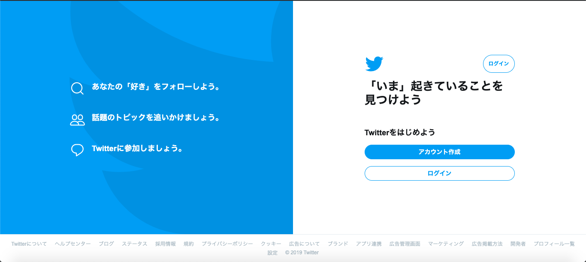
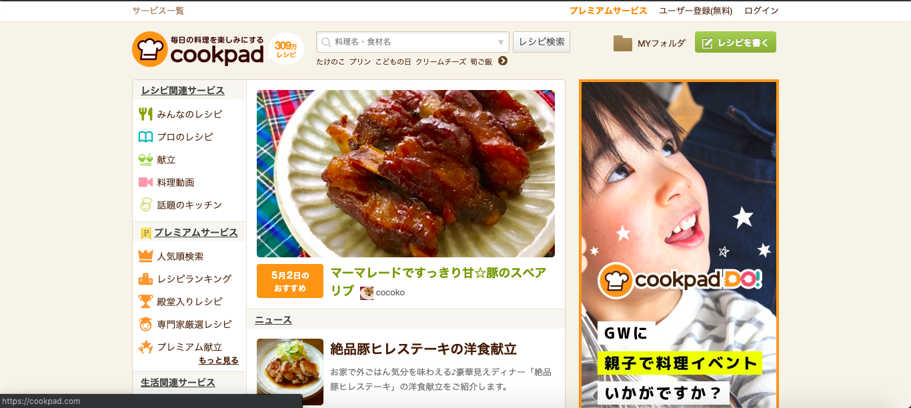

グロースハックの事例
Case 1: twitter
Twitterでは、非アクティブユーザーをアクティブにさせたグロースハックの事例です。
Twitterでは、新規登録してもそのあと利用がなく、非アクティブになっていくユーザーが多く、アクティブ化させたいというねらいがありました。 そのためにまず非アクティブになっているユーザーのデータを分析してみると、新規登録初日に5〜10人のアカウントをフォローしているユーザーは利用継続率が高いということが判明しました。
そこで、新規登録したユーザーに対してチュートリアルの中で5人フォローさせるという内容を入れました。 ツイッターがこの仕組みを取り入れたところ、月あたりのアクティブユーザーの数が4倍になったそうです。
Case 2: Dropbox
Dropboxはデータやファイルをインターネット上に保存できるオンラインストレージサービスです。
Dropboxはホームページを訪問したユーザーがトップページで離脱しているという問題に着目しました。 もともとはDropboxのソフトウェアをダウンロードするボタンとDropboxの説明ムービーを見るためのボタンが並んでいる下に、新規登録のリンクがあるという構成でした。 そこでトップページを少しずつシンプルにして「ユーザーにしてほしいこと（＝登録）」をもっとも目立つ位置には表示するデザインに変更しました。 これにより、訪問者のトップページでの離脱率を下げたようです。
またユーザーに継続して利用してもらうために、友人を招待することで最大16GBの容量をプレゼントする、という施策を取りました。その結果、登録率を60％引き上げることに成功しました。
さらに、TwitterなどのSNSとの連携に対してもインセンティブを付与し、SNSを通じてユーザーを獲得した他、「Dropquest」というインターネット上のコンテストを実施しました。
「Dropquest」では、ユーザーはさまざまなパズルやゲームに挑戦し、クリアすると無料の容量がもらえたり、上位に入賞すると特製グッズがもらえるというものでした。 このコンテストが多くのメディアに取り上げられたことにより、DropBoxの知名度は一気に広がりました。
Case 3: Airbnb

Airbnbは空いている部屋を貸したい人と借りたい人をマッチングさせる仲介サービスです。
Airbnbでは、サービス開始当初、創業者自らが家や物件の写真を撮っていたのですが、それをプロのカメラマンに依頼するようになったことにより、多くのユーザーを集めることに成功しました。
また、大手の地域情報コミュニティサイトCraigslist（不動産や求人情報、宿泊施設などを投稿できるコミュニティサイト）と連携させ、Airbnbへ物件を投稿すると自動的にCraigslistにも投稿される仕組みを作りました。
その結果、CraigslistのリストにAirbnbの物件が多く掲載されました。借り手は物件を実際に予約しようと思った際に、Airbnbのアカウントを作成することになります。Airbnbは一気にユーザー数を増やすことに成功したのです。
地域の宿泊地情報が豊富であり、かつAirbnbにとっては最大の競合相手であったCraigslistを活用してユーザー数を獲得したことは、グロースハックの事例としてかなり有名となりました。
Case 4: クックパッド
料理レシピの紹介サイトとして有名なクックパッドは、グロースハックによって3年以内に有料会員数を現在の100万人から400万人に増やすという目標を設定しました。
具体的には、「有料機能の7日間無料お試し」や、「外部サービスの会員限定で無料クーポンを付与」、「誕生日クーポン」の発行、9月9日限定で無料クーポンを配布する「クックの日」キャンペーン、検索結果の最適化を目的とした「殿堂入りレシピ」の設置などが公開されました。
Case 5: Pinterest
Pinterestは、「好みのWebコンテンツを共有する」というコンセプトで開始された画像・動画共有サイトです。サービス開始されたときから、グロースハックの考え方を反映させた施策を投入しており、急成長を遂げています。
すべての機能を1画面に集約すること、際限なくスクロールさせることで、ユーザビリティを向上させながら滞在時間を忘れて没頭できるのでは、という仮説のもと、ユーザーインターフェースを設計していきました。
その結果「ユーザーが新しいユーザーをフォローする」、「滞在時間が長くなることで検索上位を各ページが確保する」という効果をもたらし、ログインのプレミアム感も手伝って7,000万人以上のユーザーを抱え、月間25億PVをもたらすまでに成長を遂げました。
Case 6: いい部屋ネット（大東建託）
賃貸住宅ビジネスを手がけ、いい部屋ネットというサイトも運営する大東建託では、キャンペーンやプロモーションに巨額な費用がかかること、数年ごとのサイトリニューアルに半年〜1年という長い時間を要すことに悩みを抱えており、コスト面で効果の高い施策を模索している状況でした。
ちょうどサイトリニューアルのタイミングを迎えた時点で、もしかしたらサイト自体の問題があり、改善することによって効果があるかもしれないという仮説のもと、スマートフォンサイトのプロモーションを、グロースハッカーへのオファーでA/Bテストを実施してみることになった。
その結果、最初のA/Bテストで150%というコンバージョン数を実現し、サイト自体をユーザーに最適化することを考え、リニューアルは先延ばし、サイトの分析や改善を行うことで知見を蓄積することになりました。